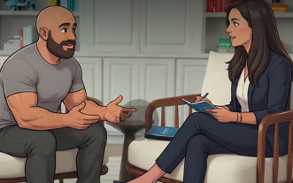

La fricción interpersonal en el lugar de trabajo no es solo una molestia: es un riesgo de seguridad directo. Cuando las tensiones aumentan, el enfoque se pierde, la comunicación se degrada y se omiten pasos críticos de protección. Esta guía ofrece herramientas para reemplazar el juicio con curiosidad, manejar conversaciones difíciles y mantener a nuestros equipos alineados y protegidos.
La comunicación clara y el respeto mutuo son tan vitales para nuestra seguridad como el EPP y los candados de bloqueo.
Cuidarnos unos a otros implica abordar la fricción con empatía antes de que afecte la seguridad en el sitio.

Reemplaza el juicio con curiosidad antes de que la tensión sea un peligro.
La interacción humana es compleja; dominarla es nuestra mayor ventaja operativa.
El diálogo calmado protege la seguridad de todos